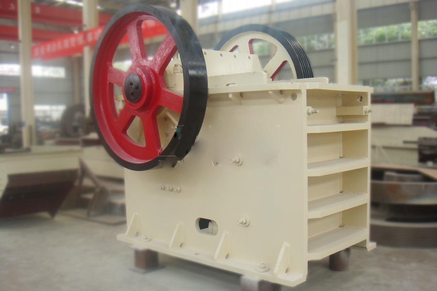

- Home >
- application case >
- jaw crusher in kenya

Construction waste crushing production line

Mobile construction waste crushing station for urban construction waste crushing.
jaw crusher in kenya
Henan euro Jaw Crusher manufacturers, Kenya medium Pew e-hammer prices
Key words: e-stone-breaking machine, the European version of Jaw Crusher, Jaw Crusher prices
Description: Zhengzhou have many Jaw Crusher manufacturers, Han when the customer wants to buy e-hammer will come to Zhengzhou. CAG Zhengzhou mining machinery limited company Zhengzhou is one of the manufacturers, the company produced Pew Jaw Crusher and European type Jaw Crusher machine quality, price concessions, is the sand production line optimal Crusher stone factory.

E-broken stone, European version of Jaw Crusher, medium Shanghai CAG Pew Jaw Crusher manufacturers mining machine introduced
Jaw crusher, ouban jaw crusher, jaw crusher manufacturers and Pew Shanghai CAG machine introduced
Shanghai CAG Mining Machinery Co., Ltd. is located in Zhengzhou City, Henan Province, Xingyang Province, the geographical position is superior, the transportation is convenient, is the domestic mining machinery manufacturing experience, the company is mainly engaged in mining rock jaw crusher, impact crusher, cone crusher, hammer crusher, mobile crushing station, construction waste treatment equipment, fine sand recycling machine, and sand stone production line, construction waste treatment production line design professional company. Companies adhere to the “quality of survival” business purposes, to “CAG mills, the extraordinary achievements of honor”. With the rapid development of China’s modern economy, the company actively play its own advantages, to the high quality of mining broken equipment research and development, has for real estate, water conservancy and hydropower, metallurgy, highway, high-speed railway and other industries to provide a large number of high quality and low price.
Hunan Hengyang Huatai stone factory is producing 200 tons of cement production line using CAG machine broken greenstone Pew jaw crusher
Project profile:
Output: 200 tons / hour
Location: Hengyang Hunan, China
Material: gray greenstone
Device configuration: feeder 1 Taiwan, PEW900*1200 jaw crushing machine 1 sets, strike back type crushing machine, vibrating screen 1, a full set of attachments and central control system
The equipment supplier: Shanghai CAG Mining Machinery Co. Ltd.
Project background:
Shanghai CAG mine this line is second to Kenya’s stone factory supplies and equipment. It is reported that the main broken production line in stone gray-pyroxenite, crushed aggregates can be widely used in water conservancy and hydropower, highways, railways, chemical industry, building materials industry. Our company according to the market demand for the customer quantity body custom of producing 200 tons of gray-green rock gravel line, Jaw Crusher for crushing ratio, more crushing and less grinding performance advantages, so that the entire line production has increased.
E-type broken stone, European version of Jaw Crusher, medium, Pew Jaw Crusher details
E type broken stone machine, and Europe version jaw type broken machine, and medium Pew e type gravel machine created has “rough broken” machine broken “fine material” of precedent has, and new business sand machine as, e type broken stone machine, and Europe version jaw type broken machine, and medium Pew e type gravel machine can on chunks material for broken, can a broken top two broken, without in the broken equipment, one-time broken to by needed material, even sand powder. Its large crushing ratio, feed grain, advantages of large capacity for many owners have replaced the traditional Jaw Crusher of idea.
E type broken stone machine, and Europe version jaw type broken machine, and medium Pew e type gravel machine makes mechanism sand line by more paragraph broken simplified to single paragraph broken, put long-term variable short-term, such can reduced artificial of cost; due to e type broken stone machine, and Europe version jaw type broken machine, and medium Pew e type gravel machine is belongs to jaw type broken machine of a, structure simple, maintenance simple, let you without worry to find professional of mechanic has. And e-stone-breaking machine, the European version of the Jaw Crusher, medium, Pew Jaw Crusher can be roughly broken or fine break, to meet your various needs. E-type broken stone, European version of Jaw Crusher, medium, Pew e-hammer allows production of sand production line can improve 30-80%, this has been confirmed by multiple owners practice. If is easy broken of stone words, can reached more high, second broken link reduced has, so not on province electric has, if a tons gravel aggregate Save II Yuan money, so a hours original production 200 tons of, not on immediately save 400 Yuan, so day 10 hours words, is has save has 4000 Yuan, a months by work 25 days drive is words, is save 100,000 yuan.
Leave Me A Message, Now
If you have any questions regarding equipment prices, production line configuration or other problems, you can send a message to us, we will contact you soon.